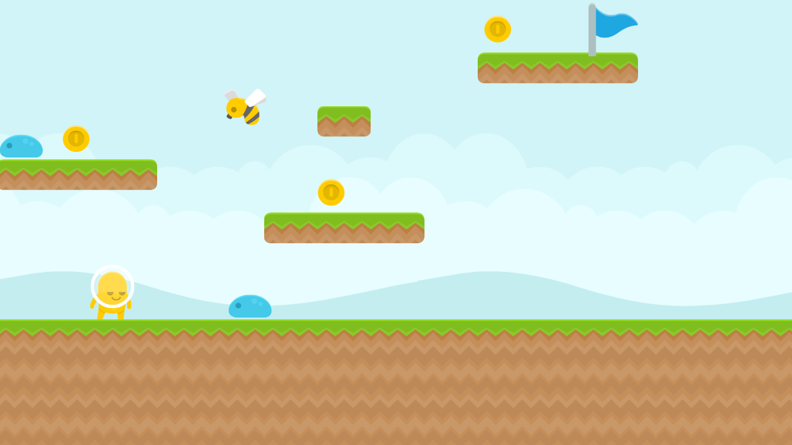
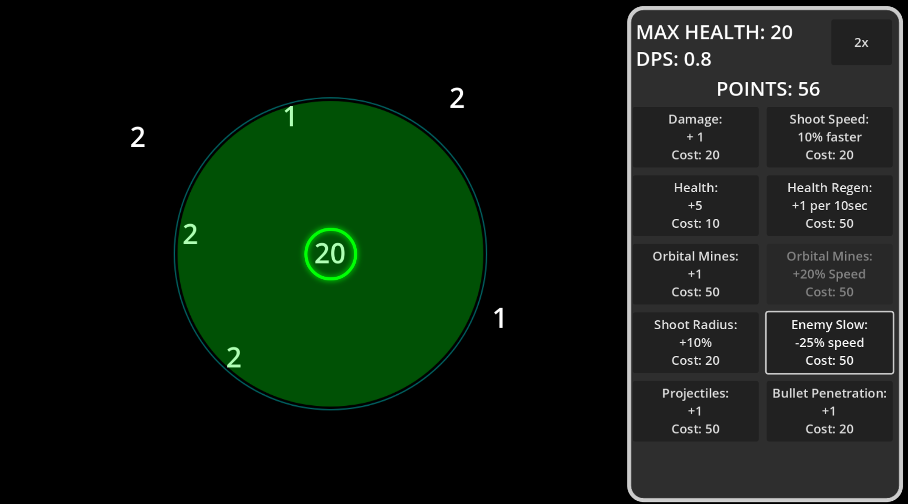

We have been hard at work learning the Godot game engine and coding in a language similar to Python. The games below were all made by by students.
Games that were made following a tutorial will only have one playable version as they will nearly all be the same. Games that allowed student choice in design will have many versions to play.
If this looks like fun and you want to learn to code join me next year!
These games were our "tutorial" games. You can see we started with simple games and worked our way to more complex games.
|
Eat the Doughnut |

Keyboard |

Whack-a-Mole |

Dodge the Blades |
Space Shooter |

Pong |
After learning simple games, these games allowed for each creator to make the game uniquely theirs.
|
Brick Breaker |
This game was an extension of Pong, where students got to practice additional practice making the ball and paddle move. Many even included a few powerups. Click below to play a game made by a student2025: Clint B. Adam F. Evan L. Jack S. Conrols |

Clicker Game |
The point of this game was for students to focus on "Variables" and focus on basic if/then statements. Click below to play a game made by a student2025: Clint B. Adam F. Evan L. Jack S. Conrols |

Infinite Scroller |
This game gave students a lot of practice spawning objects, including "level chunks", and the background. We also got more practice with the animaiton player to make movable enemies that follow a pattern. Click below to play a game made by a student2025: Clint B. Adam F. Evan L. Jack S. Conrols |
|
Minigolf |
For this game we took a small break from hard coding and focused on level design. There was still coding needed(probably more than I planned), but the end result is worth it! Click below to play a game made by a student2025: Clint B. Adam F. Evan L. Jack S. Conrols |
|
Wave Survivor-like |
Our best game yet. Clearly the learning is paying off as these are some awesome games. They are designed to be "hard" so you can only live for a few minutes before being overwhelmed, but I hope you get that "one more round" feeling while playing. Click below to play a game made by a student2025: Clint B. Adam F. Evan L. Jack S. Conrols |
|

2d Platformer |
This 10 day mini project let students make a 2D platformer, use tilemaps to build levels quickly, and do some very simple enemy 'AI' on the Bee enemy. Click below to play a game made by a student2025: Clint B. Adam F. Evan L. Jack S. Conrols |
|

Finals |
The last 20 days of the year students were to make ANY 2D game they wanted from scratch following no tutorials. There is quite a variety available. Click below to play a game made by a student2025: Mr. Henry Clint B. Adam F. Evan L. Jack S. Conrols |